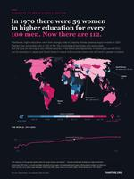

0
0
0

From the gaming news site Aftermath"
Game developer and consultant Ryan Laley traveled to Cologne, Germany from Essex, England to showcase his upcoming horror social deduction game Mimic at the annual Gamescom event. He paid "thousands of pounds" to get a booth at the show, where other game developers and press could try the game ahead of its October release. But Laley's Gamescom was cut short when he realized Friday morning that his brand new Alienware laptop, purchased for the event, was missing. The laptop was stored in a cupboard in the booth, and Laley started asking nearby vendors to see if someone had moved it. That's when he realized it was stolen — and that he wasn't alone. Laley's booth in Gamescom's business area, specifically in the International Game Developers Association Lounge, had been hit in what appears to be a string of thefts at the convention center. The business area of the convention is not open to the public, only press and others with specific tickets. Laley said Gamescom advertised this area as having 24/7 security and limited access after hours...
Publisher and merchandiser iam8bit, in a nearby booth showcasing Escape Academy 2: Back 2 School and Petal Runner, had two laptops with game builds stolen Thursday night from its booth, a representative confirmed to Aftermath.
"Meanwhile, Tessera Studios had two laptops and a Steam Deck taken from its cabinet," reports Tom's Hardware:
Gamescom organizers responded to the issues, saying that although they have arranged for uniformed guards to provide general security, individual booth security must be booked separately. They've also advised exhibitors to have insurance against theft, and said these warnings are noted in the terms and conditions for participants, as well as in the event's technical guidelines. "All cases have been reported to us and to the police, and investigations are already underway," the organizers' statement read. They also said that security is one of their priorities at the event, but also added, "At an event of this size, however, there will always be individuals attempting to take advantage of the situation."
Read more of this story at Slashdot.
The Linux Foundation's director of IT infrastructure says they now spend more CPU cycles "rendering commits for scrapers than we spend on all other kinds of legitimate access."
At any one time, across 5 geo-distributed nodes, there are 14 CPU cores doing nothing but rendering git commits as html....
[W]hen a source is guaranteed to be LLM-free, like the entire history of kernel commits, it's worth its weight in gold as a source of training data... At the time of writing, linux.git is about 1.48 million commits. Oh, and we have about 922 forks of it on git.kernel.org — but don't worry, it's actually extremely efficient on the backend, since it's mostly the same objects in every fork. Unless, of course, you're a scraper, in which case you have, oh, several BILLION valid URLs you can scrape, only to get 922 duplicates of the same 1.48 million commits — which is exactly what the scrapers are doing. But wait, it's not just commits itself. You can also ask for patches, plain renders, diffs between arbitrary commits — cgit is happy to let you, which was perfect for the times when the Internet was for humans or crawlers who obeyed robots.txt, and is AWFUL right about now, because we can generate 1.2 METRIC BAJILLION valid URLs just for a single fork of linux.git.
Initially, this was the solution — look through the logs, find out which IPs are obvious scraper bots, and fail2ban them. At first, this was easy, because the bots helpfully told you who they were via their user-agent. Then, they wised up and started pretending that they were random vanilla browsers. So, we started banning them by IP — after all, it's easy to figure out that an IP that is trying to grab every possible commit in a 8-year-old abandoned fork of linux is not really some lone Chrome on Windows user who is just furiously clicking every link that comes across their screen. The bots then started fanning out to entire subnets, but this was still meh, because obviously an IP coming from Google Compute is just pretending to be a Firefox user...
And... that's when things turned really, really ugly. Suddenly, the crawlers were coming from millions of random residential or mobile IPs, all pretending to be random modern browsers. An IP like that would make 4-5 requests and then never show up in the logs again... They descended like swarms of locust, hit hard and fast until the system fell over and then moved on to the next target until you recovered. Then, they returned. Rinse. Repeat. They still do that — welcome to the wonderful world of "proxy SDK monetization." It's big business, and your TV is probably doing it...
Today, git.kernel.org receives about 6M daily requests demanding to see random commits. Of these, 66% are still immediately batted away with the Anubis challenge, but 33% are now solving the math and getting through to the main site — because apparently what we have to offer is worth spending a ton of cycles to calculate the Anubis challenge... With a bunch of generous assumptions, legitimate requests are only about 2% of git.kernel.org traffic — everything else are scrapers...
[W]e're turning off features to reduce the number of crawlable URLs and to gate off actions that are expensive for us to run. Expect to lose some functionality, at least when accessing our resources anonymously. Trust me, we hate it just as much as you, but at this point it's a necessity... [W]e promise to still offer all of our data for download to anyone who asks. You just may have to jump through more hoops to get it.
Sorry.
Read more of this story at Slashdot.
In May Chess.com "quietly launched" a free educational poker site named Gambit, reports The Verge, where players can learn the game and improve an Elo-like rating without risking real money. And next Chess.com will expand into more classic games, including go, backgammon, and mahjong:
Like Gambit, Chess.com is developing Elo-style rating systems for these games, as well. [Chess.com's chief growth officer, Albert Cheng] didn't say when the new sites will launch but that "development is moving quite rapidly" on them, using the same playbook he used for Gambit... He and one other employee took Gambit from prototype to launch within a year, partly with help from AI, mainly for coding tasks. "I think the biggest advantage that it's provided is essentially being able to read our existing codebase and our design system and apply consistent patterns to how we develop Chess.com over to a different platform and do so quickly," Cheng said.... "Just because code is easier to write doesn't mean that you just let it run on its own, but it certainly is a superpower in getting things off the ground."
Cheng also said the version of Gambit that's live at the time of writing has "zero or close to zero" AI-created assets, which were used in early prototypes.
According to Cheng, without help from AI, getting another site up and running would have required a bigger team or "would have been a lot more disruptive to the status quo of building and growing Chess." Now that a "small, scrappy" team can get a new platform off the ground much faster, it's opened the door for Chess.com to dip into more games, starting with poker.
The poker site already has 75,000 members, according to a blog post Friday — and they've already played nearly 20 million hands and completed 100,000 lessons. The site is now holding a daily poker tournament, and on Monday will broadcast the event with live commentary on their Twitch and YouTube channels.
Read more of this story at Slashdot.
It's already happened — at least on Google Maps.
Google's online maps reflect name changes in official government sources, Google posted Saturday. So when the U.S. Geographic Names Information System formally changed the name for "Lake Ontario" to "Lake America," Google also renamed it "Lake America" — for visitors from the U.S.
"Those in Canada will continue to see 'Lake Ontario'," Google said.
And people from every other country in the world... "will see both names." Though here's how it will be written...
Lake Ontario (Lake America)
"These updates follow our long-standing policy for bodies of water with names that vary from country to country, and are starting to roll out now."
Meanwhile, NPR reports that Ontario's Premier posted a billboard reading "Lake Ontario — Now and Always" on Canada's side of the lake (repeating the message in French). And The Daily Beast reports Google move has also drawn some criticism online:
"Hey you gave one of the Great Lakes the wrong name; pretty embarrassing mistake so you might want to fix that," one user wrote on X...
MapQuest has said it will not be changing the name, and instead launched a new tool that allows users to rename it themselves to whatever they want.
Read more of this story at Slashdot.
America's public education system has become "an avenue for multitrillion-dollar companies to enact their agendas," argues a NewYork Times reporter who's covered that tech industry influence for over 10 years. Big tech companies "advocate for new laws to require schools to teach industry-aligned subjects. They sit on committees that help shape learning standards for public school students..."
The reporter concludes that "Silicon Valley's efforts to capture the attention of education professionals and provide student training materials can also double as marketing or indoctrination."
They enable some of the most powerful corporations on the planet to spin rosy technology stories for administrators, teachers and students, giving them a sanitized view of industry practices and product risks. Many parents would likely object if, say, Exxon Mobil wrote their children's environmental science curriculum. Or if Purdue Pharma trained their children's biology teachers. Yet, over the last decade, schools have often embraced the technology industry in similar ways with few questions asked.
The article excerpts the soon-to-be-released book " Coding Kids: Big Tech's Battle to Remake Public Schools," with the reporter adding more thoughts on LinkedIn:
Every few years, Silicon Valley has urged American public schools to quickly adopt the latest technology or teach the latest tech subject: Big Data analytics; laptops for every child; algorithm-driven math and reading apps; compter programming; virtual reality. And each time the urgent arguments sounded remarkably similar: if schools just adopted the latest tech tool, or taught the latest tech subject, it would democratize learning for every child and equip students with valuable career skills.
Despite good intentions, "today we know some of those classroom tech drives did not exactly pan out as advertised."
Now some of the same companies that urged schools to provide laptops and coding lessons are employing similar arguments to urge schools to quickly adopt A.I. tools. I've spent years covering Chromebooks and student chatbot use. And I'm troubled by our collective amnesia around school tech.
Thanks to long-time Slashdot reader theodp for sharing the article.
Read more of this story at Slashdot.
ScienceDaily reports:
A microchip about the size of a grain of rice can generate a highly organized "rainbow" of light, a capability that could eventually support faster, higher-capacity 6G communications and extremely precise timing for quantum technologies. Physicists at Loughborough University, working with an international research team, demonstrated a system that produces a series of precisely spaced light frequencies. Those optical frequencies can then be converted into multiple high-frequency electromagnetic signals known as millimeter waves.
Millimeter waves are attracting growing interest for future communications because they can provide considerably more bandwidth, giving networks more room to transmit data. A major obstacle, however, has been producing these signals with the precision and stability required for advanced applications... "They could ultimately contribute to faster, higher capacity 6G networks," [said Dr. Luke Peters, of Loughborough University's Emergent Photonics Research Centre], "but the potential goes far beyond communications. These frequencies could also be used in radar systems as well as spectroscopy and astronomical instruments, helping scientists study materials and make extremely precise measurements of the universe.
"These applications are still some way off, and there are challenges to overcome before the technology can be used in real-world systems — but our latest work has tackled a major one..." A microcomb generates an extremely precise set of light frequencies arranged somewhat like the colors in a rainbow, although the light itself is invisible to the human eye. A specialized antenna can then convert those optical frequencies into millimeter waves. Earlier research demonstrated that microcombs could produce a single precise millimeter wave frequency. Generating many frequencies simultaneously could be far more useful because each could potentially serve as a separate channel for transmitting information at the same time. Achieving that, however, requires a microcomb with exceptional stability and signal quality.
In a new Nature Communications paper, the Loughborough led researchers report a system capable of doing exactly that.
Their system connects its chip-based microresonator to a much larger loop of optical fiber where laser light continuously travels through both parts of the system, according to the article.
"The team is now investigating how the microcomb system could eventually move from a laboratory experiment into practical technology."
Read more of this story at Slashdot.
Citrix's Desktop as a Service (DaaS) product includes a lightweight, hardened second operating system called UniconOS (once called "eLux") to offer Windows customers a write-protected file system Citrix says is secure against computer viruses and other malware. Nerds.xyz reports:
According to the company, the environment remains isolated from the Windows filesystem and uses Secure Boot protections covering the shim, bootloader, kernel, and initial RAM filesystem. That separation matters when ransomware encrypts Windows or a faulty update leaves the operating system trapped in a boot loop. Instead of repairing Windows immediately, an employee can boot into UniconOS and use Citrix DaaS to access virtual applications and desktops.
Citrix SecurAccess with Chrome Enterprise provides access to internal web applications under the organization's existing security policies. In other words, UniconOS does not actually fix the damaged Windows installation. It gives employees another route to their applications while the IT department investigates or repairs Windows... [T]he installer shrinks the Windows volume, creates a new partition, copies UniconOS onto it, and registers the necessary boot entries. Windows remains the default operating system during ordinary use, although administrators can configure boot delays and fallback behavior...
The approach could prove useful following a widespread ransomware attack or another defective Windows update resembling the CrowdStrike incident of 2024. Recovery would happen independently on every compatible endpoint instead of requiring IT employees to physically handle thousands of computers.
Thanks to Slashdot reader BrianFagioli for sharing the news.
Read more of this story at Slashdot.
A team of researchers at Southern Illinois University Carbondale engineered yeast to create cookies that were 3D printed out of plastic waste, reports Futurism:
The yeast breaks down the components of plastic compounds and agricultural byproducts like discarded plant stalks into proteins, fats, acids, and flavorings that we can eat. When these are combined together, the mixture is fed into a 3D printer that spits out cookies of any desired shape. The researchers chose to print their cookies as the Greek letter Â, creating what they call "ÂBites" — or micro bites. They haven't actually eaten one of their ÂBites yet, as they wait for university approval... "I think it has a pleasant, appealing aroma," Lahiru Jayakody, a microbiologist at SIU who led the research, told NewScientist. "And it will taste good, too. We've not tasted it, but it smells good — that's for sure — like a real cookie...."
The researchers used CRISPR gene-editing technology to reprogram yeast strains to eat polyethylene terephthalate (PET), a widely used form of plastic commonly found in disposable water bottles, food packaging, and clothes, which is rich with carbon. Before the yeast can start feasting, the PET plastics are subjected to a process called oxidative hydrothermal dissolution to break them down into smaller bits that the microbes can digest. The purported advantage of this approach is that it's environmentally friendly, using only heat, water, and oxygen. The yeast feasts on these stripped-down plastic bits, turning them into a slurry of proteins, fats, and acids that're combined with fiber, starch, and sweetener to make them more palatable. One of the yeast strains in particular was able to turn plant biomass into tasty vanilla flavorings...
[R]ight now, it's an expensive process, costing around $60 to produce a kilogram of cookies, The Guardian reported. And some experts say it's wishful thinking to believe we can 3D-print, and then eat, ourselves out of these global problems with 3D-printed, delectable treats. "We produce 400 million tons a year of plastic waste. You're not going to turn it all into cookies," Jason Hallett at Imperial College London told New Scientist. "So it's not a solution to the plastic-waste crisis. There's no way you could do this commercially. We're not gonna be eating plastic cookies."
Thanks to Slashdot reader fjo3 for sharing the article.
Read more of this story at Slashdot.
SpaceX is scheduled to launch the Roman Space Telescope on a Falcon Heavy rocket, with the launch window opening at 7:26 a.m. EDT (1126 GMT). NASA will carry the launch live on YouTube.
CNN offers this mission overview from NASA Administrator Jared Isaacman. "Roman will investigate dark matter, dark energy and the structure of the universe itself, and accelerate the future of discovery of potentially habitable planets outside our solar system." In fact, "NASA anticipates that Roman will image more than 50 times as much of the sky in the next five years as Hubble covered in three decades," reports USA Today, noting that "every single image it beams back to Earth will contain the equivalent of 100 pictures Hubble would capture."
The barrel-shaped Roman telescope is due to set up operations nearly 1 million miles from Earth and begin scouring previously unobservable areas of the cosmos... NASA will make all of Roman's data available for anyone to peruse, meaning astronomers from all over the world will have the opportunity to make use of the observatory for advanced research, NASA says... Spanning 42 feet long and more than 14 feet wide, the Nancy Grace Roman Space Telescope is outfitted with two primary instruments
Its 300-megapixel near-infrared camera is built to look across the universe and study the three-dimensional distribution of dark matter, reports The Conversation. But it's also carrying a coronagraph instrument built to dramatically reduce the glare from distant stars "that will test the technology for future missions that plan to detect Earth-like planets around other stars."
The mission's generating some excitement. "Nearly three decades after dark energy's discovery, astronomers are letting themselves hope that a breakthrough is almost at hand," writes Scientific American, adding that cosmologists "are increasingly questioning the validity of their vaunted standard model, although no one can decide exactly what comes next."
Roman will chase down three different ways of detecting dark energy, seeking to more precisely define what its effects on the universe are and whether they're changing over time. The first one involves surveying the skies for a special variety of supernova that's so predictable that scientists can use it as a beacon for calculating what a host galaxy's distance is and how fast it's moving away from us — the same technique that first betrayed dark energy back in the 1990s. The second entails mapping large numbers of galaxies to discern huge, faint bubbles in the cosmos that represent the fossilized signatures of sound waves that froze out of the universe's primordial plasma as it expanded and cooled. The sizes of those bubbles scale with the size and growth of the very early universe, offering a powerful probe for studying cosmic change over time. The third tracer uses a technique called microlensing, which reveals clumps of dark matter via their warping of background starlight, to fill in scientists' still incomplete reckoning of matter's cosmic distribution.
The Houston Chronicle reports that the telescope will also study rogue planets, isolated black holes, starquakes and planet-forming disks around nearby stars.
"Almost regardless of what your scientific interest is, Roman is probably already planning to take observations," Julie McEnery, Roman's senior project scientist at NASA, said during a July news conference."
NBC News reports that after the Roman telescope launches, "it's set to spend more than three months journeying to its final destination, located roughly 1 million miles from Earth."
Three primary surveys are planned over the course of the Roman telescope's mission. During the largest one, which will last over a year, the telescope will peer through the Milky Way's dense, star-packed center, known as the galactic bulge, building a vast catalog of all the astronomical objects it observes. The second and third surveys will focus on dark matter and dark energy.
Axios notes that Roman's primary mirror "is about the same size as that of Hubble's, but at 80% less weight — reflecting huge tech advancements since Hubble was built in the 1970s." And NPR reports NASA began planning the $4.3 billion telescope 15 years ago to search for supernovas to help explore dark energy — when "a call came in from the government office in charge of surveillance satellites."
"The National Reconnaissance Office reached out to NASA," [remembers cosmologist Daniel Scolnic at Duke University], "saying, 'We have this amazing satellite sitting in a hangar that we're not using. And what what do you guys think about instead of pointing downwards, we point upwards, and you guys use it?'" NASA said yes. It took some substantial modifications, but now that old satellite is set to become NASA's next major space observatory....
Another goal of the telescope is to spend a month surveying all the stars in the Milky Way galaxy. Julie McEnery is Roman's project scientist. She says even though Roman has broadly the same sensitivity and sharpness of vision as the currently orbiting Hubble Space Telescope, its design lets it do things much faster. "That one month of observations to survey our Milky Way galaxy would take about a century with Hubble," says McEnery.
Read more of this story at Slashdot.
BMW is about to release their most screen-dependent vehicles ever, reports Car and Driver:
Step into the BMW iX3, and you'll notice something is missing: real buttons. The climate controls are fettered to the center screen, as is nearly every other feature, save for a handful located in the center console — at least the window switches are still on the doors...
But don't blame a desire for larger profit margins; BMW's move away from physical switchgear and toward touchscreen dependence is the fault of younger buyers, according to one executive. In an interview with CarExpert, Vikram Pawah, the CEO of BMW Group Australia, said that young buyers prefer the newer controls... According to the executive, younger customers are less patient with their technology. "They want things done quickly, and they're multitasking," Pawah said. "And we have to keep that in mind. That's how customers are evolving. They are multitasking...."
Tesla has always forced functions to its center screen; newer players such as Rivian do the same. And in recent years, established brands like Mazda and Mercedes-Benz have moved more and more functions to touchscreens.
BMW's iX3 also includes a new safety feature — a side-radar that detects if a cyclist or vehicle is approaching, and delays the release of the electronic door lock "until the danger passes."
Read more of this story at Slashdot.
In an Amazon News blog post, their HR leader describes using AI to write 100,000 lines of code — 25 years after she last coded. "Do you know how empowering it is to realize that after 25 years away from coding, you can actually build again?" First she built a calendar app for her family, but then used Amazon's AI-powered coding tool Kiro to write an app for Amazon's internal "Everyone Can Build" event.
We opened the competition to every employee on our team, and within just a few weeks, more than 1,500 people were building. I couldn't believe what they built. One employee built an app that turned a nearly four-hour manual process into a one-second automated check, saving tens of thousands of hours annually. Another made a desktop pet named Momo that keeps your tasks, reminders, and shortcuts a click away.
Since then, I've written over 100,000 lines of code with AI. What I've found is that the more you work with these tools, the more natural the process becomes, and the more you realize they're expanding what you're capable of, not replacing it. You don't need perfection to start. You just need to dive in. When I decided to build the submission app for our team competition, I didn't know how to begin, so I asked our internal AI workplace assistant, called Aza. It pointed me to the right tools and helped me take the first step. From there, I opened Kiro and started building. When you give employees the ability and tools to solve problems themselves, they will surprise you with what they create...
At Amazon, every employee has access to AI tools. Whether someone needs a quick answer, wants to move faster in their day-to-day, or is ready to try building something new, the resources are there. The more people use these tools, the more capable they become with them, and that experience carries forward in their careers... We also want to make it easy for people to build credentials that are recognized across industries. That's why AI training is free for every Amazon employee. Amazon covers the full cost of one AWS AI certification exam per year, with options ranging from foundational AI concepts to professional-level generative AI. Employees can choose the path that fits where they are in their learning journey.
Long-time Slashdot reader theodp notes that 7 months ago Galetti also took to Amazon News to announce the elimination of 16,000 corporate jobs, a move which CNBC noted coincided "with a push to invest heavily in artificial intelligence."
The job reductions come just a few months after October's layoffs, when 14,000 employees were let go across Amazon's corporate workforce. At the time, the company indicated the cuts would continue in 2026 as it found "additional places we can remove layers."
Read more of this story at Slashdot.
"Multikernel Technologies has put out mklinux v7.0-mk2, the first public release of the multikernel Linux tree it's been building since last year," reports the blog It's FOSS:
The basic premise of the project is that one physical server can run several independent Linux kernels side by side, each with its own dedicated CPUs and memory. So, the same box could run a database on one kernel and a GPU training job on another without either kernel touching the other's resources... One kernel runs as the host, controlling the machine's CPUs, memory, and PCI devices. When it spins up a new kernel instance, that instance gets its own dedicated slice of hardware and boots straight onto it using Linux's kexec mechanism, running natively rather than under a hypervisor.
The host tracks all of this through device tree overlays under /sys/fs/multikernel/, and it can shift hardware between running instances while everything stays up.
That's a different setup from both VMs and containers. A VM still puts a hypervisor and a host kernel between the app and the hardware. A container skips the hypervisor, but every tenant on the machine shares one kernel... This release only supports x86_64 hardware, though Multikernel Technologies says the architecture-specific code is already modular enough for other ports to follow later.
The article notes they're selling multiple products based on the kernel tree, including one for running AI agents in their own kernel with direct GPU access and one that promises to patch a running kernel without taking the system down.
Read more of this story at Slashdot.
Google's AI assistant Gemini crawls your Google apps for "more personalized suggestions," in a feature they call Personal Intelligence. Now when given permission, an Android/iOS app called Dreambeans "uses Personal Intelligence to connect information from Google apps like Gmail, Calendar, Photos, YouTube and Search History, to curate a finite collection of daily stories designed to spark new ideas." In a slick new video Google says the app will "surface what matters to you."
The blog 9to5Google notes that after previously requiring a subscription, Dreambeans "is now available for free Google Accounts in the US to test, calling it "very much like a hyper-personalized Google Now or Discover feed."
Instead of using stock imagery, each Dreambeans story is accompanied by Nano Banana 2-generated artwork that uses an illustrated style. For example, if Dreambeans recommends a hike, you might see yourself and a group of friends at that location... There's also an "Ask anything" chat experience to get more information. You can leave feedback by tapping the heart or downvoting, while the chat interface allows you to provide more details. "Tune your feed" lets you tell Dreambeans what you "want more stories about" and what it should never show.
Or, as TechCrunch senior writer Lucas Ropek puts it, you get a curated list of AI-illustrated "stories" that "will turn your life into a cartoon"
[Gozde Oznur, the product lead behind the new app, told TechCrunch the app] has also been built as a doomscrolling antidote, in that it only provides users with a limited number of stories per day — typically 10 to 14. The idea is to get a few inspirational ideas and then go out and live your life, she said. A lot of companies are currently trying to court the user that is sick of phone addiction. I recently reviewed a startup, Bond, which also uses AI to auto-generate lifestyle suggestions for the user.
What about privacy protections? According to Oznur, they are pretty solid. The only person with access to the app's stories is the user, she said. Users can also delete their data whenever they want, and can choose which Google services they want to connect to the tool.
Read more of this story at Slashdot.
Axios reports:
Some of the world's largest music publishers filed a blockbuster lawsuit against Anthropic late Friday night, alleging "one of the largest and most blatant ongoing thefts of intellectual property in history."
The suit is the opening salvo in what is now likely to be a yearslong fight over music, AI, and how intellectual property is protected in a new era of technology... The Sony/Warner lawsuit is notable because it's broad. It alleges Anthropic unlawfully trained its models off "tens of thousands" of music publishers' copyrighted compositions, whereas other lawsuits have focused on a narrower set of works. BMG's lawsuit against Anthropic, for example, claims infringement against 493 compositions.
What they're saying: "Defendants Anthropic and its founders Dario Amodei and Benjamin Mann have conducted a brazen campaign of illegally torrenting, scraping, and downloading copyrighted works on a massive scale in order to develop, operate, and reap enormous profits from Anthropic's 'Claude' series of artificial intelligence ('AI') models," the plaintiffs write in the 48-page complaint. They also claim that Anthropic pirated thousands of copyrighted musical works...
More details from The Verge:
The companies are asking for up to $150,000 per work, plus up to $25,000 for each instance when identifiable copyright data was stripped. In total, the damages could amount to several billion dollars if a court finds in Sony and Warner's favor and awards the maximum amount...
The suit alleges that Mann used BitTorrent to download over five million pirated books, and that employees downloaded at least two million more from Pirate Library Mirror. It also claims that Anthropic scraped lyrics from sites like MusixMatch and LyricFind, which paid to license content from the labels.
Read more of this story at Slashdot.
This week Debian voted on whether to ban AI-assisted contributions. The winning proposal? "Debian neither endorses nor prohibits the use of generative AI tools" in its projects, documentation, and packaging... Generative AI "is neither exempt from nor subject to special rules beyond the standards already expected of Debian contributors."
"The responsibility for every contribution rests with the contributor who submits it, who remains accountable for its technical quality, legal acceptability, and suitability for inclusion in Debian."
"We recognize that such tools can substantially improve the productivity of contributors when used responsibly, allowing volunteers to spend more of their limited time on work that requires technical expertise, judgment, review, and collaboration.
The Debian Project nevertheless expects that all contributions submitted to Debian, regardless of how and with which tools they were produced, satisfy the same standards of quality, correctness, maintainability, and legal compliance. The use of a generative AI tool does not diminish the contributor's responsibility for the work they submit. Contributors are expected to understand, review, test, and, where appropriate, modify AI-assisted output before incorporating it into Debian. Blindly accepting or uploading AI-generated material without appropriate human review is inconsistent with Debian's established development practices.
We enourage our contributors to disclose whether a contribution was made with AI assitance, but do not require them to do so.
Debian acknowledges that the legal status of material produced by generative AI systems remains the subject of ongoing discussion in many jurisdictions, including questions relating to copyright... The Project does not seek to resolve these unsettled legal questions through this General Resolution, nor does it adopt a position on whether AI-generated output is, in whole or in part, copyrightable or derived from copyrighted works. Instead, Debian continues to rely on the judgment and responsibility of its individual contributors. Project members are expected to exercise appropriate care when using generative AI tools, to consider the provenance and licensing implications of material they contribute, and to avoid introducing content whose legal status they cannot reasonably justify. Existing Debian policies governing licensing, copyright, software freedom, and the acceptance of contributions continue to apply irrespective of the tools used to produce those contributions.
It also cautions contributors to keep keys, credentials, and embargoed security reports from leaking to
third-party AI services.
But discussion continues on Debian's mailing list. "I regret the loss of contributors," wrote the author of the winning proposition (while acknowledging it would have happened with either option winning).
"It is just too early to take a final decision on the matter. Let's revisit this in two years or so, and let this mess of a GR be a warning for our future selves."
Other comments from the mailing list:
"On a very personal note, I regret that the winning option does not
acknowledge all the legitimate concerns around AI: environmental impact,
copyright and licensing uncertainty, the health of Free Software
communities, and the strain of aggressive scraping on the open web... [W]e have a lot of work ahead of us to act as a community and understand how we can continue to accommodate the very large minority that would have preferred to ban or discourage AI.
"I also think that our next discussion should distinguish between locally running LLMs and cloud LLMs. The way things are going, locally running LLMs will be an alternative, and then you can much better control what was the training data and the Freeness of the thing."
Thanks to long-time Slashdot reader Robbat2 for sharing the news.
Read more of this story at Slashdot.
Financial Times : Big Tech reported Q2 “other income” rose significantly to $160B+, driven by investments in AI companies, raising concerns of paper gains overstating the AI boom — Analysts say large paper windfalls on investments in OpenAI, Anthropic and SpaceX have muddied the tech sector's earnings metrics
The Information : Sources: OpenAI starts letting some major customers pay only when its AI completes tasks, as Salesforce and other AI providers test outcome-based pricing — OpenAI in recent months has started giving some major customers the option of paying only when its AI completes tasks …
Hannes Rudolph / OpenClaw Blog : OpenClaw releases OpenClaw 2.0, its largest update to date built by 933 contributors, with a simplified installation process, a rebuilt browser app, and more — How a push for simpler setup and a first-class browser experience grew into OpenClaw 2.0. — Today we released by far the largest update in the history of OpenClaw.
Anissa Gardizy / Wall Street Journal : IPO documents: SoftBank's SB Energy plans to file for an IPO as soon as this week, aiming to raise $5B to $7B, and has awarded OpenAI warrants worth ~$5.5B — SB Energy's agreement deepens its financial ties with the artificial-intelligence company in an effort to build out projects
Charlotte Yang / Bloomberg : Shein raised $1.7B in its Hong Kong IPO, giving it a $26B market cap, far below its ~$100B valuation in 2022, as growth slows amid tariffs and competition — Shein Global Holdings Ltd. completed its initial public offering at a valuation that's a fraction of what the company was once worth.
Cheng Ting-Fang / Nikkei Asia : Taiwanese authorities raided the office of PCB maker Unimicron, an Nvidia and Intel supplier, alleging it illegally labeled China-made parts as made in Taiwan — TAIPEI — Taiwanese prosecutors said they are investigating Unimicron, a key supplier to Nvidia and Intel, over allegations …
Associated Press : Google updates Maps to show Lake America for US users, Lake Ontario for Canadian users, and both for the rest of the world, citing the US GNIS' name change — Google has updated its maps application to rename Lake Ontario as ‘Lake America’ for users in the United States …
Jason Douglas / Wall Street Journal : The US-led AI boom is offsetting the global growth squeeze from the energy crunch; ING says the boom accounts for about a third of recent US economic growth — Growth is holding up despite renewed tensions over trade, geopolitics and bond markets, though the AI boom's outsize role is a growing concern
Chris Metinko / Axios : Chip design startup Agentrys has raised a $19.1M seed round led by Etna Labs and a $5.4M pre-seed led by MediaTek — Agentrys, a Nvidia alum-led chip design startup, raised $24.5 million in funding, CEO Mark Ren tells Axios Pro exclusively. … - The platform allows users to create their own agents …
Mark Gurman / Bloomberg : John Ternus inherits rising component costs, staff retention issues, efforts to catch up in AI, and other challenges as he replaces Tim Cook on September 1 — Apple's changing of the guard will be gradual, with outgoing CEO Tim Cook handling Trump, China. — Stepping into his new role …
Mayank Parmar / BleepingComputer : Anthropic signs out some Claude users, removes saved payment methods, and issues refunds after infostealer malware on user PCs hijacked sessions to drain usage — Anthropic is warning some Claude users that infostealer malware on their PCs has stolen active Claude login sessions …
Huo Jingnan / NPR : Analysis: popular chatbots debunked false narratives spread by Russia, China, and Iran most of the time; search engine AI summaries did too, but at a lower rate — Since AI chatbots exploded in popularity and Google started offering AI-generated answers, people who research foreign influence campaigns …
Aaron Tilley / The Information : Sources: OpenAI bought tens of thousands of Macs for RL, Anthropic rents them, Nvidia sees Apple as its main local AI rival as Macs gain traction with AI devs — The hottest products at Apple right now are not the iPhone, the iPad or a buzzy new show on the company's streaming service.
Mark Gurman / Bloomberg : A look at the management changes John Ternus could make as many key Apple execs prepare to leave in the next few years; Apple tested a Pencil for folding iPhone — Also: Apple experimented with a Pencil for the coming foldable iPhone. — When John Ternus becomes Apple's CEO this week …
Mark Bergen / Bloomberg : A look at the race to build quantum computers, as the tech becomes a geopolitical battleground with potential to transform cybersecurity, finance, and more — Companies are racing to create devices that could revolutionize finance, supercharge medical and climate research …